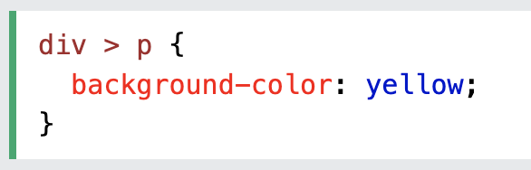

A combinator is something that explains the relationship between the selectors. There are four different combinators in CSS: descendant selector, child selector, adjacent sibling selector, and general sibling selector.
| Name | Description | Example |
|---|---|---|
| Descendant Selector | Matches all elements that are descendants of a specific element. | |
| Child Selector (>) | The child selector selects all elements that are the children of a specified element. |  |
| Adjacent Sibling Selector (+) | The adjacent sibling selector is used to select an element that is directly after another specific element. Sibling elements must have the same parent element, and "adjacent" means "immediately following". | |
| General Sibling Selector (~) | The general sibling selector selects all elements that are next siblings of a specified element. |
| Selector | Example | Example Description |
|---|---|---|
| element element | div p | Selects all p elements inside div elements |
| element>element | div > p | Selects all p elements where the parent is a div element |
| element+element | div + p | Selects the first p element that are placed immediately after div elements |
| element1~element2 | p ~ ul | Selects every ul element that are preceded by a p element |